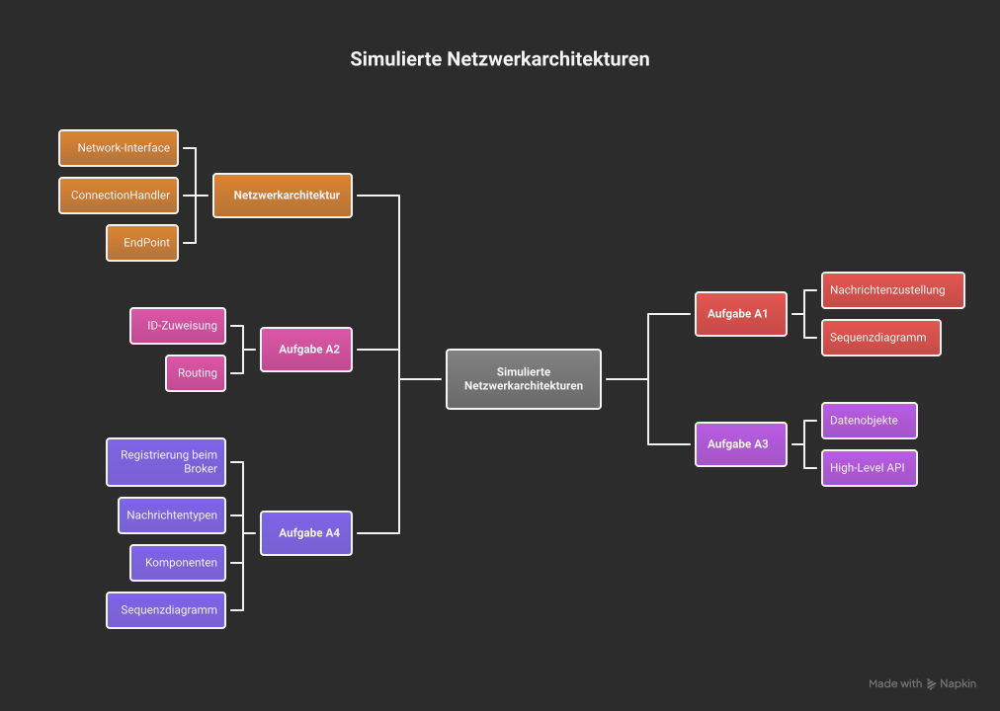
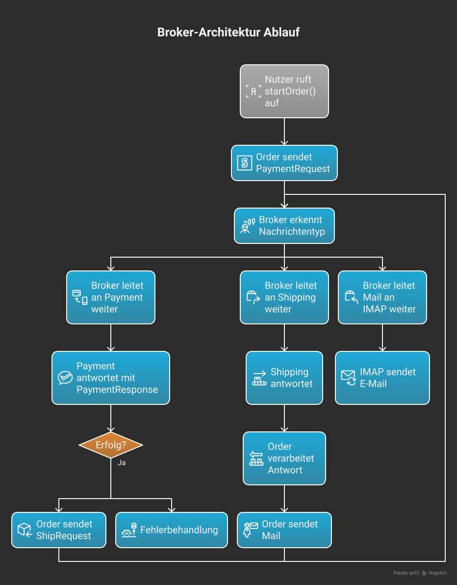

2. Netzwerkarchitektur (NetworkConnection.kt)
2.1 Übersicht
Das Framework simuliert Netzwerke ohne echte Sockets. Es stellt eine API bereit, die das
Verbindungskonzept (Client/Server) über Callbacks und virtuelle Endpunkte abbildet. Das ist
perfekt für Übungen, weil es das Netzwerkverhalten testbar und deterministisch macht.
2.2 Kern-Interfaces
interface Network {
fun connect(address: String, handler: ConnectionHandler): EndPoint?
fun provide(address: String, handler: ConnectionHandler): Boolean
fun remove(address: String, handler: ConnectionHandler): Boolean
}
interface ConnectionHandler {
fun onMsg(endPoint: EndPoint, msg: String)
fun onData(endPoint: EndPoint, data: Any)
fun onClose(endPoint: EndPoint)
fun onOpen(endPoint: EndPoint)
}
interface EndPoint {
fun sendMsg(msg: String)
fun sendData(o: Any)
fun close()
}
Erklärung
- provide(address, handler): registriert einen Server an einer Adresse (z. B. "http://127.0.0.1:80/").
- connect(address, handler): verbindet einen Client mit dieser Adresse; gibt ein
EndPoint zurück.
- ConnectionHandler ist das Objekt, das Events erhält (Nachrichten, Datenobjekte, Open/Close).
2.3 Architekturdiagramm (konzeptionell)
[ Client Handler ] <- leftEndPoint --> NetworkConnection <-- rightEndPoint -> [ Server Handler ]
sendMsg/sendData (internal routing) onMsg/onData
Hinweis: left/right ist rein konventionell — in dieser Implementation steht left typischerweise für die Client-Seite.
3. Aufgabe A1 – EchoServer
3.1 Zweck
Der EchoServer demonstriert die Basis: ein Server, der eingehende Textnachrichten
(oder Datenobjekte) entgegennimmt und eine einfache Antwort zurückgibt.
3.2 Wichtige Methoden
override fun onMsg(endPoint: EndPoint, msg: String) {
println("SERVER, got msg: '$msg'")
endPoint.sendMsg("<$msg>")
}
override fun onData(endPoint: EndPoint, data: Any) {
println("SERVER, got data: $data")
endPoint.sendData(data) // Echo für Objekte
}
3.3 Warum ist das wichtig?
Diese Aufgabe sorgt dafür, dass man versteht, wie Messages transportiert werden und
wie das Framework onOpen/onClose auslöst. Viele Fehler in Netzwerkprogrammierung
lassen sich bereits auf dieses Verhalten zurückführen.
4. Aufgabe A2 – ChatServer (IDs & Routing)
4.1 Ziel
Der ChatServer erweitert EchoServer um:
- Vergabe eindeutiger IDs an verbundene Clients
- Speicherung der EndPoints in Maps
- Routing von
SendMessage-Objekten an Ziel-Clients
4.2 Datenklassen
data class AssignId(val id: Int)
data class SendMessage(val msg: String, val toId: Int, val fromId: Int)
4.3 Implementationskern
val clients = mutableMapOf<Int, EndPoint>()
val endPointToId = mutableMapOf<EndPoint, Int>()
var nextId = 1
// onOpen:
clients[nextId] = ep
endPointToId[ep] = nextId
ep.sendData(AssignId(nextId))
nextId++
// onData:
when(data) {
is SendMessage -> {
val target = clients[data.toId]
if (endPointToId[ep] == data.fromId) {
target?.sendData(data)
}
}
}
4.4 Sicherheits- und Konsistenzgedanken
- Die Prüfung
endPointToId[ep] == data.fromId verhindert, dass ein Client im Namen eines anderen sendet.
- Wenn Ziel-ID nicht vorhanden ist, ignoriert der Server das Paket — man könnte alternativ eine Fehlermeldung zurücksenden.
4.5 Diagramm
Client1 (id=1) -- SendMessage(to=2) --> ChatServer
ChatServer --> EndPoint of client2: sendData(SendMessage(...))

6. Main.kt – Gesamtablauf
6.1 Ablauf
- SimpleNetwork-Instanz erzeugen
- ChatServer.provide(address, handler)
- Client1 connect(address), Client2 connect(address)
- Server verteilt IDs (AssignId)
- Clients senden Nachrichten (sendData / sendMsg)
6.2 Erwartete Konsolenausgabe
SERVER: client connected
Client1: got data: AssignId(1)
Client2: got data: AssignId(2)
Client1: sends SendMessage(to=2,...)
Client2: receives and prints message
7. Aufgabe A4 – Broker-Architektur (ausführliche Implementierung)
7.1 Motivation & Ziele
In realen Microservice-Architekturen sprechen Services selten direkt miteinander.
Ein Broker (Message Router) bietet folgende Vorteile:
- Entkopplung: Services kennen nur Broker-Adresse
- Routing & Vermittlung
- Übersicht & Monitorbarkeit (alle Nachrichten laufen über einen zentralen Punkt)
- Skalierbarkeit (Broker kann anschließend ersetzt oder erweitert werden)
7.2 Architekturprinzip
Alle Komponenten verbinden sich mit derselben Broker-Adresse (z. B. broker://local).
Der Broker verwaltet eine Map name → EndPoint und routet Nachrichten nach Typ oder Empfängername.
7.3 Nachrichten-Typen (DTOs)
data class MsgRegister(val name: String)
data class PaymentRequest(val corrId: String, val account: String, val amount: Double)
data class PaymentResponse(val corrId: String, val success: Boolean)
data class ShipRequest(val corrId: String, val items: List)
data class ShipResponse(val corrId: String, val success: Boolean)
data class Mail(val to: String, val subject: String, val body: String)
data class GenericForward(val to: String, val payload: Any)
7.4 Komponenten (Verhalten)
OrderComponent
Öffentliche API: startOrder(items: List<String>, account: String)
Ablauf: Erzeugt corrId, sendet PaymentRequest an Broker, wartet auf PaymentResponse.
Bei Erfolg: sendet ShipRequest, wartet auf ShipResponse. Final: sendet Mail.
PaymentComponent
Verarbeitet PaymentRequest. In dieser Demo setzen wir Erfolg simuliert auf true.
Antwort: GenericForward("order", PaymentResponse(...)) oder PaymentResponse an Broker.
ShippingComponent
Verarbeitet ShipRequest und antwortet mit ShipResponse.
IMAPComponent
Empfängt Mail und simuliert Versand per Konsolenausgabe.
7.5 Sequenzdiagramm (detailliert)
User -> Order.startOrder(items, acct)
Order -> Broker : sendData(PaymentRequest(corr, acct, amount))
Broker -> Payment : sendData(PaymentRequest)
Payment -> Broker : sendData(GenericForward("order", PaymentResponse(corr,true)))
Broker -> Order : sendData(PaymentResponse)
Order -> Broker : sendData(ShipRequest(corr, items))
Broker -> Shipping : sendData(ShipRequest)
Shipping -> Broker : sendData(GenericForward("order", ShipResponse(corr,true)))
Broker -> Order : sendData(ShipResponse)
Order -> Broker : sendData(Mail(to,subject,body))
Broker -> IMAP : sendData(Mail)
IMAP -> (console)
7.6 Warum corrId?
Korrelation-IDs (corrId) verknüpfen Request/Response-Paare über asynchrone Nachrichten hinweg.
Ohne corrId wüsste die Order-Komponente nicht, zu welcher Bestellung die PaymentResponse gehört,
besonders wenn mehrere Bestellungen parallel laufen.
7.7 Fehlerbehandlung & Robustheit
Obwohl die Demo synchron und deterministisch ist, sind folgende Fehlerfälle zu beachten:
- Payment fehlt / Payment-Service nicht registriert: Broker antwortet mit einem Fehler oder
Order erhält
PaymentResponse(..., success=false) und informiert Kunden (Mail).
- Shipping-Service ausgefallen: ShipRequest kann fehlschlagen → Order sollte retry-Logik oder Dead-letter-Handling haben.
- Unbekannter Zielname: Broker sendet Fehlermeldung zurück (z. B.
"ERROR:Unknown target").
Empfehlung: In echten Systemen implementiert man Retries mit Backoff, Dead-letter-Queues
und beobachtet Timeouts. Für die Übung reicht eine konsistente Fehlerantwort.
7.8 Erweiterbarkeit
Neue Komponenten können ohne Änderung des Brokers hinzugefügt werden:
sn.connect(brokerAddr, handler) // handler sendet MsgRegister("newservice")
Broker.components["newservice"] = endPoint
7.9 Implementierungsnotizen (Code-Highlights)
Wichtige Broker-Logik (vereinfachte Pseudocode-Variante):
when (data) {
is MsgRegister -> components[data.name] = endPoint
is PaymentRequest -> forward to payment component (if exists) else respond fail
is ShipRequest -> forward to shipping
is GenericForward -> components[data.to]?.sendData(data.payload)
is Mail -> components["imap"]?.sendData(data)
}
7.10 Test-Szenario (wie du es in Main aufrufst)
// BrokerDemo.kt (Kurzversion)
val sn = SimpleNetwork()
val broker = BrokerServer(sn, "broker://local")
val imap = ImapComponent(sn, "broker://local")
val payment = PaymentComponent(sn, "broker://local")
val shipping = ShippingComponent(sn, "broker://local")
val order = OrderComponent(sn, "broker://local")
Thread.sleep(200)
order.startOrder(listOf("itemA","itemB"), "ACC-123")
Thread.sleep(1000)
Erwartete Konsolenausgabe (Stichpunkte):
- Broker registriert Komponenten
- Order: PaymentRequest gesendet
- Payment verarbeitet und bestätigt
- Order: ShipRequest gesendet
- Shipping bestätigt, IMAP erhält Mail (Konsole zeigt Mail)
